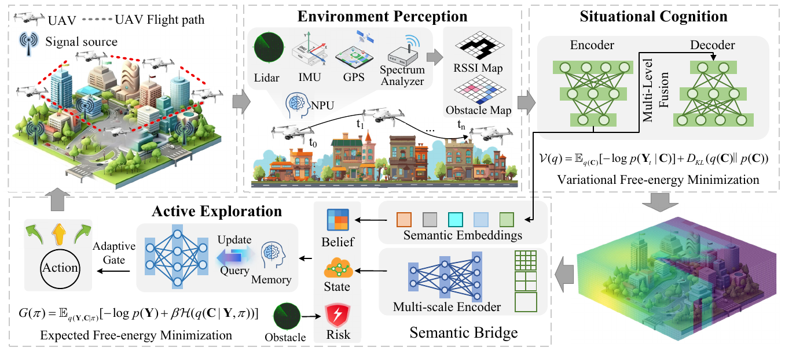
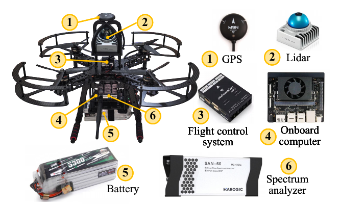
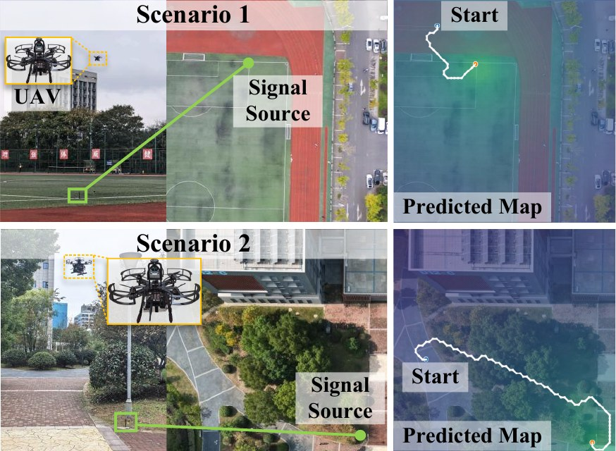

Results
Error against the number of readings
On the 64 × 64 grid with the non-revisiting spiral sampling pattern, ECDNet attains the lowest RMSE among all compared methods at every sampling rate. With 41 readings, or 1.00% of the grid, ECDNet reaches 4.042 dBm, which is lower than the 5.335 dBm of U-Net with 164 readings, or 4.00% of the grid.
Show the values as a table
| Method | 10 (0.24%) | 41 (1.00%) | 82 (2.00%) | 123 (3.00%) | 164 (4.00%) | 200 (4.88%) |
|---|---|---|---|---|---|---|
| ECDNet | 6.689 / 0.644 | 4.042 / 0.780 | 3.155 / 0.810 | 2.847 / 0.820 | 2.787 / 0.822 | 2.746 / 0.823 |
| U-Net | 11.005 / 0.483 | 8.078 / 0.589 | 6.335 / 0.646 | 5.781 / 0.665 | 5.335 / 0.673 | 4.924 / 0.684 |
| KG-Net | 11.428 / 0.508 | 10.118 / 0.547 | 9.114 / 0.570 | 8.527 / 0.582 | 8.098 / 0.588 | 7.769 / 0.593 |
| AE3D | 12.058 / 0.454 | 11.670 / 0.454 | 11.296 / 0.457 | 10.896 / 0.460 | 10.525 / 0.475 | 10.093 / 0.482 |
| Kriging | 13.096 / 0.605 | 12.468 / 0.585 | 12.048 / 0.565 | 11.827 / 0.552 | 12.117 / 0.529 | 12.164 / 0.512 |
Each cell gives RMSE (dBm) / SSIM. The column headings give the number of readings and the sampling rate of the 64 × 64 grid.
Nine continuous routes on 120 additional scenes
The comparison was repeated along nine continuous routes on 120 held-out scenes that were generated after model selection, with transmitter powers perturbed within 1.5 dB of the nominal values. Along each route, ECDNet uses the first 41 readings and U-Net uses the first 164 readings. ECDNet attains the lower mean RMSE along all nine routes, and the lower RMSE in 88 to 112 of the 120 scenes for each route.
Show the values as a table
| Route | ECDNet, 41 readings (dBm) | U-Net, 164 readings (dBm) | Mean paired difference (dB) | Scenes where ECDNet is lower |
|---|---|---|---|---|
| Random walk | 4.105 [3.646, 4.600] | 7.982 [7.587, 8.388] | 3.877 [3.403, 4.347] | 112 of 120 |
| Diagonal sweep | 3.518 [3.098, 3.959] | 6.228 [5.836, 6.630] | 2.710 [2.181, 3.247] | 99 of 120 |
| Outward spiral | 2.712 [2.186, 3.324] | 5.033 [4.771, 5.315] | 2.321 [1.730, 2.848] | 110 of 120 |
| Autonomous policy | 4.072 [3.559, 4.647] | 6.297 [5.863, 6.756] | 2.225 [1.572, 2.831] | 96 of 120 |
| Action cycle | 4.656 [4.062, 5.297] | 6.574 [6.162, 7.012] | 1.918 [1.137, 2.661] | 88 of 120 |
| Center spiral (Table II) | 3.234 [2.513, 4.059] | 4.880 [4.625, 5.154] | 1.646 [0.868, 2.318] | 103 of 120 |
| Column sweep | 3.536 [3.003, 4.139] | 4.833 [4.586, 5.089] | 1.297 [0.704, 1.843] | 96 of 120 |
| Row sweep | 3.367 [2.880, 3.915] | 4.507 [4.284, 4.746] | 1.140 [0.614, 1.607] | 98 of 120 |
| Inward rings | 3.301 [2.845, 3.826] | 4.141 [3.953, 4.347] | 0.840 [0.330, 1.302] | 88 of 120 |
Brackets give 95% bootstrap confidence intervals over scenes (10,000 resamples). The paired difference is the RMSE of U-Net minus the RMSE of ECDNet.
Method
ECDNet couples spectrum map construction with flight decisions in a closed perception, cognition, and execution loop. Each new reading updates the map, and the updated map guides the next move of the UAV.
- Perception
- Sparse multiband signal strength readings, the UAV pose, and an obstacle map from onboard sensing form the observation.
- Cognition
- A physics-informed encoder and decoder with distance-aware convolutions estimate the dense four-band map and extract a global semantic representation.
- Active exploration
- The policy combines local map information with the semantic representation passed through the semantic bridge and selects the next sensing action.

Onboard platform
The UAV carries a spectrum analyzer, a LiDAR, positioning sensors, and a Jetson Orin NX. The complete cognition and decision chain of ECDNet runs onboard, and the model loop takes 37.33 ms on average (38.48 ms at the 95th percentile), which is less than 40% of the 100 ms control period.
- Cognition
- Decision
- Masking and action generation
- Remaining control period
- Onboard computer
- Jetson Orin NX, 16 GB
- Power mode
- 25 W
- Control period
- 100 ms
- Endurance
- 18 min


Citation
@misc{liang2026ecdnet,
title = {Embodied Intelligence for Spectrum Map Construction
in Low-Altitude Wireless Networks},
author = {Liang, Hongtao and Wan, Yiyao and Ji, Jiahuan and
Meng, Lingda and Zhou, Fuhui and Wu, Qihui},
year = {2026},
howpublished = {Project page},
url = {https://lht-research.github.io/ecdnet/}
}